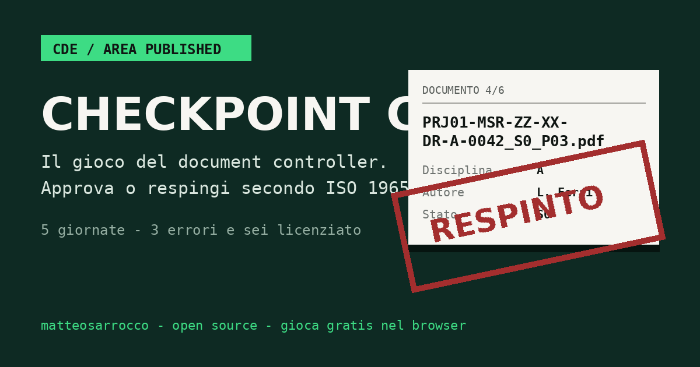

Trasformazione digitale · Gestione informativa
Metto ordine dove le informazioni fanno rumore.
Automatizzo il noioso, governo il complesso. Il dato è un asset — io costruisco gli argini in cui farlo fluire.
Chi sono
Matteo Sarrocco.
Lavoro nella trasformazione digitale applicata al settore delle costruzioni e delle infrastrutture. Mi occupo di ottimizzare e standardizzare i processi, favorendone l’automazione e la semplificazione. Ho progettato e sviluppato sistemi e procedure end-to-end per la gestione informativa.
In Rete Ferroviaria Italiana, nella Direzione Stazioni, coordino iniziative di innovazione digitale attraverso la gestione informativa, sviluppando processi e strumenti a supporto della Stazione Appaltante per migliorare la qualità, la tracciabilità e l’efficienza della progettazione e realizzazione degli investimenti.
Competenze
Dove metto le mani.
Information Governance
Standard, regole e policy per la qualità, la tracciabilità e la sicurezza del patrimonio informativo.
Data analytics
Dashboard e indicatori per leggere lo stato dei progetti e dei dati.
Automazione e integrazione
Flussi automatici e integrazione tra sistemi eterogenei per togliere lavoro ripetitivo ai processi.
Sviluppo low-code
Applicazioni su misura per esigenze operative specifiche.
CDE Management & Audit
Configurazione, amministrazione e monitoraggio degli ambienti di condivisione dati per progetti complessi.
Pubblicazioni e interventi
Messo per iscritto.
- 2019Building Information Analysis: visualizza i tuoi dati3D Modeling & BIM 2019 · DEI Tipografia del Genio Civile · ISBN 9788849619423
- 2019Gestión integrada de obraEUBIM 2019, Universitat Politècnica de València · pp. 272–279 · ISBN 9788490488058
- 2019Proceso de calidad en BIMEUBIM 2019, Universitat Politècnica de València · pp. 306–314 · ISBN 9788490488058
- 2018Progettare con qualità in BIM3D Modeling & BIM 2018 — Nuove Frontiere · DEI Tipografia del Genio Civile · ISBN 9788849619416
- 2017Stabilire una strategia vincente in un processo BIM3D Modeling & BIM 2017 · DEI Tipografia del Genio Civile · ISBN 9788849645019
Interventi
- 2026Beyond workflows: Building a connected data ecosystem for infrastructure projectsAutodesk Rail Summit 2026 · 10 novembre
- 2019Il BIM nel restauro di un edificio storicoOrdine degli Architetti di Roma · Confcooperative
- 2019IT’S HUB TiburtinaOrdine degli Architetti di Roma
- 2018Safety BIMDigital&BIM Italia · BIM User Group
- 2018Progettare con qualità in BIMDigital&BIM Italia · BIM User Group
Il gioco
Checkpoint CDE
Vesti i panni del document controller: approva o respingi i documenti in arrivo secondo le regole della ISO 19650 — naming, stati, firme .p7m, metadati. Tre errori e sei fuori.
Gratuito, open source, si gioca nel browser.
